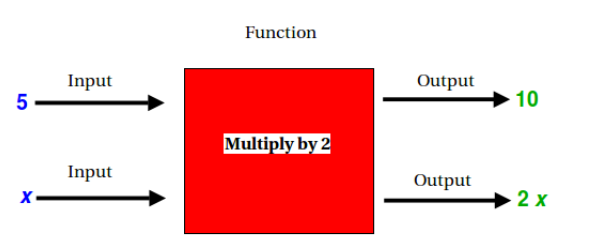

from __future__ import print_function
from ipywidgets import interact, interactive, fixed, interact_manual
import ipywidgets as widgets
from traitlets import traitlets
from IPython.display import display, Math, Latex
import matplotlib.pyplot as plt
import numpy as np
import sympy as sp
from functools import partial
#
# Auxiliary functions needed to parse function string inputs
#
# operator dictionary
unary_operators=['neg','sqrt','abs','exp','log','sin','cos','tan','sec','csc','cot','arcsin','arccos','arctan','arcsec','arccsc','arccot']
binary_operators=['+','-','*','/','^']
#Reserve some symbols in Sympy
x, y, z, h = sp.symbols('x y z h')
def is_number(s):
# checks whether the string s is a number (integer or float)
try:
float(s)
return True
except ValueError:
return False
def is_letter(s):
# checks whether the string s is a single letter. Returns false if s contains more than one character
if len(s)==1 and s.isalpha():
return True
return False
def needs_times(string,i):
# accepts a string and in index i. Returns true if string needs a '*' character inserted between positions i and i+1 in order to be properly interpreted as a function
if i==len(string)-1:
return False
if is_letter(string[i]) and is_number(string[i+1]):
return True
if is_letter(string[i+1]) and is_number(string[i]):
return True
if is_number(string[i]) and string[i+1]=='(':
return True
if is_letter(string[i]) and string[i+1]=='(' and get_adjacent_characters(string,i)[0] not in unary_operators:
return True
if string[i]==')' and is_letter(string[i+1]):
return True
if string[i]==')' and is_number(string[i+1]):
return True
if string[i]==')' and string[i+1]=='(':
return True
return False
def get_adjacent_characters(string,i,test=lambda x:is_letter(x)):
# returns a triple of the form [s,a,b] where s is the largest substring of string containing the index i where all the characters match a specific form. The default is that all the characters in s are letters. a and b are the indices in string of the first and last chcaracters in s respectively.
s=string[i]
if not test(s):
return []
j=i+1
while j<len(string) and test(string[j]):
s=s+string[j]
j+=1
k=i-1
while k>-1 and test(string[k]):
s=string[k]+s
k-=1
return [s,k+1,j-1]
def fix_minuses(string):
# adjusts a string to account for the inconvenient fact that the '-' symbol can be interpreted as either a minus sign or a negative sign.
i=0
while i<len(string):
if string[i]=='-':
[m,a,b]=get_adjacent_characters(string,i,test=lambda x:x=='-')
if a==0:
if b%2==1:
string=string[b+1:]
else:
string='-'+string[b+1:]
i=0
elif b<len(string)-1:
s1=string[:a]
s2=string[b+1:]
if string[a-1] in ['+','*','/','^']:
if (b-a)%2==1:
string=s1+s2
else:
string=s1+'-'+s2
else:
if (b-a)%2==1:
string=s1+'+'+s2
else:
string=s1+'-'+s2
i=a+1
else:
if (b-a)%2==1:
string=string[:a]
else:
string=string[:a]+'-'
i=len(string)-1
i+=1
return string
def add_times(string):
i=0
while i<len(string):
if string[i]==' ':
ws=get_adjacent_characters(string,i,test=lambda x:x==' ')
if ws[1]==0:
string=string[ws[2]+1:]
elif ws[2]==len(string)-1:
string=string[:ws[1]]
elif is_letter(string[ws[1]-1]) and is_letter(string[ws[2]+1]):
string=string[:ws[1]]+'*'+string[ws[2]+1:]
else:
string=string[:ws[1]]+'*'+string[ws[2]+1:]
i-=1
if needs_times(string,i):
string=string[:i+1]+'*'+string[i+1:]
i+=1
return string
def check_adjacency(s):
if s[0]=='(' and s[1]==')':
return ['emptry parentheses: ()']
if s[0]=='(' and s[1] in ['+','*','/','^']:
return ['empty operand: '+s]
if s[0] in binary_operators and s[1]==')':
return ['empty operand: '+s]
if s[0] in binary_operators and s[1] in ['+','*','/','^']:
return ['double operator: '+s]
return []
def get_variables(list_form):
var=list(set(get_variables_dup(list_form)))
var.sort()
return var
def get_variables_dup(list_form):
if type(list_form) is not list:
if is_number(list_form):
return []
else:
return [list_form]
if len(list_form)==2:
return get_variables(list_form[1])
else:
return get_variables(list_form[1])+get_variables(list_form[2])
#
# end auxiliary parsing functions
#
# Check format of input string whether it corresponds to "correct" expression
def check_format(string):
if string=='':
return ['empty']
issues=[]
nest_level=0
neg=False;
for i in range(len(string)):
if string[i]=='(':
nest_level+=1
if string[i]==')':
nest_level-=1
if nest_level<0:
neg=True
if i<len(string)-1:
issues+=check_adjacency(string[i:i+2])
if (string[i] not in binary_operators) and (not is_letter(string[i])) and (not is_number(string[i])) and (string[i] not in ['.','(',')']):
issues+=['invalid character: '+string[i]]
if nest_level>0:
issues+=['more open parentheses than close parentheses']
if nest_level<0:
issues+=['more close parentheses than open parentheses']
if neg:
issues+=['parentheses unbalanced']
if string[0] in ['+','*','/','^']:
issues+=['cannot begin with an operator']
if string[-1] in binary_operators:
issues+=['cannot end with an operator']
i=0
while i<len(string):
if is_letter(string[i]):
word=get_adjacent_characters(string,i)
if word[0] in unary_operators and (word[2]==len(string)-1 or not string[word[2]+1]=='('):
issues+=['function '+word[0]+' must be followed by parentheses']
i=word[2]
i+=1
return issues
def to_list_form(string):
if string[0]=='-':
neg=True
else:
neg=False
nest_level=0
plus=[]
minus=[]
times=[]
divide=[]
power=[]
for i in range(len(string)):
if string[i]=='(':
nest_level+=1
if string[i]==')':
nest_level-=1
if string[i]=='+' and nest_level==0:
plus+=[i]
if string[i]=='-' and nest_level==0 and (i==0 or (i>0 and string[i-1] not in ['*','/','^'])):
minus+=[i]
if string[i]=='*' and nest_level==0:
times+=[i]
if string[i]=='/' and nest_level==0:
divide+=[i]
if string[i]=='^' and nest_level==0:
power+=[i]
if len(plus)>0:
pos=plus[0]
elif len(minus)>0 and not neg:
pos=minus[0]
elif len(minus)>1 and neg:
pos=minus[1]
elif len(times)>0:
pos=times[0]
elif len(divide)>0:
pos=divide[0]
elif len(power)>0:
pos=power[0]
else:
pos=-1
if pos>-1:
return [string[pos],
to_list_form(string[:pos]),
to_list_form(string[pos+1:])]
if string[0]=='(' and string[-1]==')':
return to_list_form(string[1:-1])
if neg:
return ['neg',to_list_form(string[1:])]
for func in unary_operators:
if string.startswith(func):
return [func,to_list_form(string[len(func):])]
return string
class BaseFunction:
def __init__(self,*args):
if len(args) > 0:
self.set_function(args[0])
else:
self.set_function()
def set_function(self,*args):
if len(args) == 0:
self.str_form = ''
self.list_form = []
self.tex_form = ''
self.sym_form = sp.sympify('-1')
self.compilable = False
self.func_is_defined = False
# parse argument according to type (string or sympy expression)
elif type(args[0]) == str:
# perform some pre-processing
self.str_form=fix_minuses(add_times(args[0]))
# check format of input string
self.issues=check_format(self.str_form)
# if format ok, try to convert to various forms
if len(self.issues)==0:
self.compileable=True
try:
# get list_form
self.list_form=to_list_form(self.str_form)
# collect variables and get symbolic form
# get the variables from the list form and put them in a string
self.func_symbols = get_variables(self.list_form)
# now create sympy symbols for each variable symbol found
if len(self.func_symbols) > 0:
var_string=self.func_symbols[0]
i=1
while i < len(self.func_symbols):
var_string+=' '+self.func_symbols[i]
i+=1
self.func_vars = sp.symbols(var_string)
# create sympy expression from input string, converting usual exp sign to Python exp
self.sym_form = sp.sympify(self.str_form.replace('^','**'))
# use sympy converter to initialize tex form
self.tex_form = sp.latex(self.sym_form)
# Set "defined" flag
self.func_is_defined = True
except:
self.compileable=False
self.list_form=[]
self.sym_form=sp.sympify('-1')
self.tex_form=''
self.issues=['This function could not be compiled for an unknown reason']
self.func_is_defined = False
else:
self.compileable=False
self.list_form=[]
self.sym_form=sp.sympify('-1')
self.tex_form = ''
self.func_is_defined = False
# if agrument is sympy expression, we can initialize right away
elif isinstance(args[0], tuple(sp.core.all_classes)):
self.sym_form = args[0]
self.compileable=False
self.str_form = str(self.sym_form)
self.list_form=[]
self.tex_form = sp.latex(self.sym_form)
self.func_is_defined = True
else:
self.compileable=False
self.list_form=[]
self.sym_form=sp.sympify('-1')
self.tex_form = ''
self.func_is_defined = False
# check whether function is equal to a given expression
def check_function(self,expr):
if self.func_is_defined == True:
print(expr)
test_function = BaseFunction(expr['new'])
print(self.tex_form)
print(test_function.tex_form)
if sp.simplify(self.sym_form-test_function.sym_form) == 0:
print("Correct!")
return True
else:
print("Not correct.")
return False
# Derive a function class with widget methods:
class WidgetFunction(BaseFunction):
def __init__(self, *args):
if len(args) == 0:
self.get_input_from_widget()
else:
self.set_function(args[0])
def set_function_on_click(self,input_text,button):
self.set_function(input_text.value)
print("You entered: ")
display(Math(self.tex_form))
def get_input_from_button_widget(self):
w_g = widgets.Text(
value='',
placeholder='Type something',
description='g(x) = ',
continuous_update=False,
disabled=False
)
display(w_g)
button = widgets.Button(description="Submit")
display(button)
button.on_click(partial(self.set_function_on_click,w_g))
def subs_into_function(self,expr):
return self.sym_form.subs(vars[0], expr)
def check_function_against_input(self, name):
input_field = widgets.Text(
value='',
placeholder='Type answer and press enter',
description= name + ' = ',
continuous_update=False,
disabled=False
)
input_field.observe(self.evaluate_text_input, names='value')
display(input_field)
# check whether function is equal to a given expression
def evaluate_text_input(self,expr):
input_function = BaseFunction(expr['new'])
print("You entered: ")
display(Math(input_function.tex_form))
if sp.simplify(self.sym_form - input_function.sym_form) == 0:
print("Correct!")
return True
else:
print("Not correct. Please try again.")
return False
# def evaluate_text_input_against_expr(self,expr):
# input_function = BaseFunction(expr['new'])
# print("You entered: ")
# display(Math(input_function.tex_form))
# if sp.simplify(self.sym_form - input_function.sym_form) == 0:
# print("Correct!")
# return True
# else:
# print("Not correct. Please try again.")
# return False
# def check_expr_against_input(expr):
# w_g = widgets.Text(
# value='',
# placeholder='Type and press Enter',
# description='Your answer: ',
# continuous_update=False,
# disabled=False
# )
# display(w_g)
# button = widgets.Button(description="Submit")
# display(button)
# button.on_click(partial(self.set_function_on_click,w_g))
---------------------------------------------------------------------------
ModuleNotFoundError Traceback (most recent call last)
<ipython-input-1-e432213ed182> in <module>
4 from traitlets import traitlets
5 from IPython.display import display, Math, Latex
----> 6 import matplotlib.pyplot as plt
7 import numpy as np
8 import sympy as sp
ModuleNotFoundError: No module named 'matplotlib'
Activity 2 – What is a function?¶
Part 1 – The definition of a function¶
A function is a correspondence, or, “rule” between inputs and outputs such that every input corresponds to only one output. This is different from the more general notion of a relation, where an input can be sent to multiple outputs. One can think of a function as a “machine” that accepts inputs and turns them into outputs. For example, consider the function that multiplies every input by 2. (Your calculator is a “function machine;” when you ask it a question, it only gives you one response.)
Here’s a drawing of a function machine.

If we input 5 into this function, we get 10 as the output. If \(x\) represents a generic number that we input, our output will be \(2x\).
Function notation¶
It would be cumbersome to have to refer to the function above as “the function that multiplies every input by 2”. Therefore, we introduce the idea of function notation as a shorter way to get the same idea across. Remember that we said inputting a generic number \(x\) will yield an output of \(2x\). This relationship tells us exactly what our function does – it multiplies inputs by 2. If we denote our function by a lowercase letter, say \(f\), we can describe what it does as
\(f(x) = 2x\).
We read this as “f of x equals 2x”. This is a short way of saying that is the function that, when \(x\) is the input, the output of the function is \(2x\).
We can convert sentences into function notation.
Example: “k is the function that divides the input 3 and adds 1” would be written as \(f(x) = \frac{x}{3}+1\).
Problem 1¶
Convert each of the following sentences to function notation.
\(g\) is the function that adds 5 to the input and takes the square root of the result.
f = WidgetFunction('sqrt(x+5)')
f.check_function_against_input('g(x)')
You entered:
Not correct. Please try again.
You entered:
Correct!
You entered:
Correct!
You entered:
Correct!
\(h\) is the function that cubes the input and then adds half of the input.
f = WidgetFunction('x^3+x/2')
f.check_function_against_input('h(x)')
\(m\) is the function that takes the reciprocal of the input and then takes the logarithm of the result.
m = WidgetFunction('log(1/x)')
m.check_function_against_input('m(x)')
You entered:
Correct!
You entered:
Not correct. Please try again.
You entered:
Not correct. Please try again.
Part 2 – Function evaluation¶
One advantage to function notation is that it makes it easy to evaluate functions; that is, input numbers or expressions into the function.
Example 1¶
Consider the function \(g(x) = x^2-1\) . This is the function that squares the input and subtracts 1 from the result. Let’s say we wanted to input 2 into this function. Using the verbal description of the function, we would do the following: i. Square the input: 2 squared is 4 ii. Subtract 1 from the result of the last step: 4 minus 1 is 3. The output is 3. Using function notation, we can do the following. We are no longer inputting a generic x; we are inputting 2. Therefore, we replace all instances of x in the functional expression with 2.
\(g(2) = 2^2-1 = 4-1 = 3\)
Example 2 – Inputting variable expressions¶
While we often input numbers into a function, we can also input expressions involving variables. We use the same technique as inputting numbers; we replace x with the new input.
For the function \(g(x)=x^2-1\), we can input \((x+1)\) for \(x\), with the following result: \(g(x+1) = (x+1)^2-1 = x^2 +2x +1 -1 = x^2 + 2x\)
When we input \((x+h)\), we arrive at \(g(x+h) = (x+h)^2-1 = x^2 +2xh +h^2 -1 \)
Problem 2¶
Let \(f(x) = \frac{1}{x^2}\). Evaluate the following.
\(f(-3)\)
f = WidgetFunction('1/(x^2)')
g = WidgetFunction(f.sym_form.subs(x,-3))
g.check_function_against_input('Answer')
\(f(1/4)\)
g = WidgetFunction(f.sym_form.subs(x,1/4))
g.check_function_against_input('Answer')
\(f(x+1)\)
g = WidgetFunction(f.sym_form.subs(x,x+1))
g.check_function_against_input('Answer')
\(f(x+h)\)
g = WidgetFunction(f.sym_form.subs(x,x+h))
g.check_function_against_input('Answer')
Part 3 – Difference Quotients¶
Given a function \(f\), we define the difference quotient as:
\(\dfrac{f(x+h)-f(x)}{h}\)
Example¶
Given the function \(g(x) = x^2-1\), its difference quotient is
\(\dfrac{g(x+h)-g(x)}{h} = \dfrac{((x+h)^2-1) - (x^2-1)}{h} = \dfrac{(x^2+2xh+h^2-1) - (x^2-1)}{h} = \dfrac{2xh + h^2}{h} = 2x+h\)
Problem 3¶
For each of the functions below, determine the difference quotient and simplify when possible.
\(f(x) = x+3\)
f = WidgetFunction('x+3')
g = WidgetFunction((f.sym_form.subs(x,x+h)-f.sym_form)/h)
g.check_function_against_input('Answer')
\(f(x) = x^2+2x\)
f = WidgetFunction('x^2+2x')
g = WidgetFunction((f.sym_form.subs(x,x+h)-f.sym_form)/h)
g.check_function_against_input('Answer')
\(f(x) = \dfrac{1}{2x}\)
f = WidgetFunction('1/(2x)')
g = WidgetFunction((f.sym_form.subs(x,x+h)-f.sym_form)/h)
g.check_function_against_input('Answer')